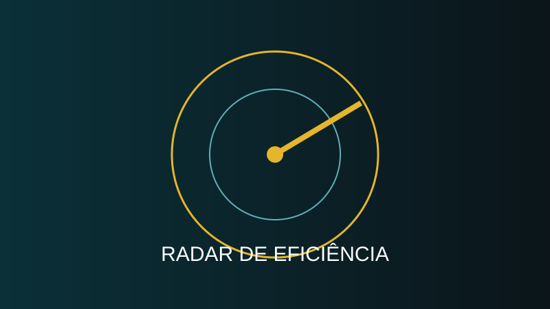
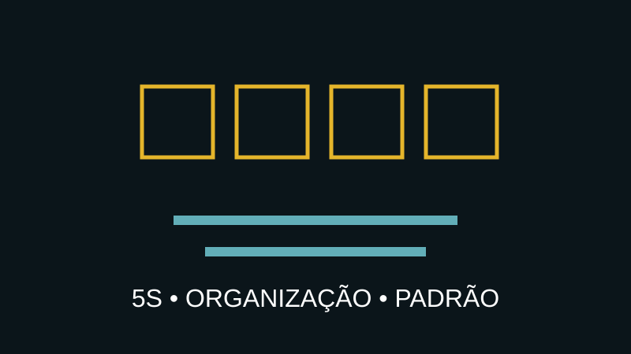
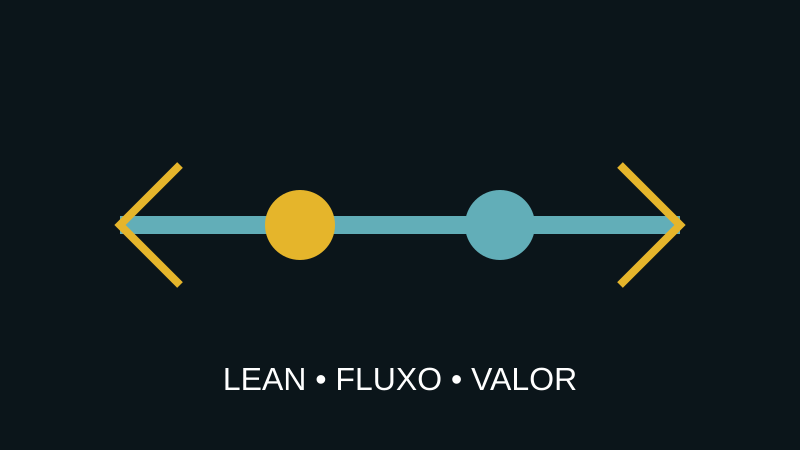
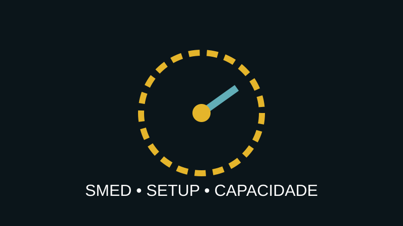
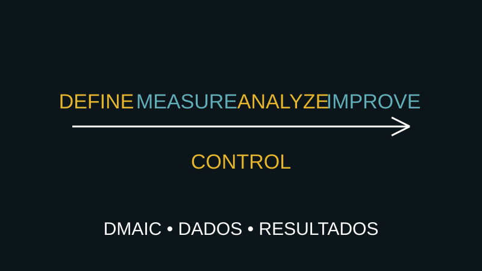
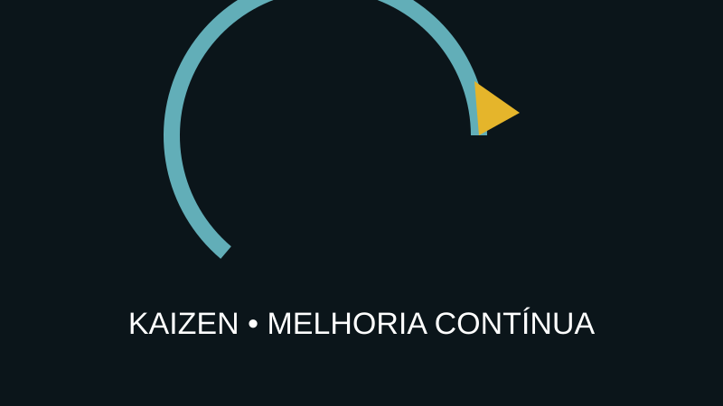
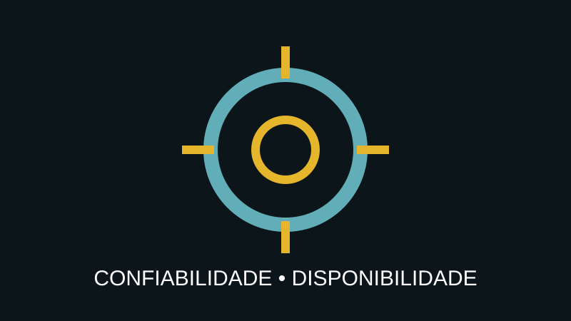

Onde sua empresa está perdendo dinheiro, tempo e capacidade?
Diagnóstico de eficiência operacional para localizar perdas, gargalos, desperdícios e oportunidades de ganho.
Descobrir minhas perdas →Toda empresa tem desperdícios. O problema é quando eles ficam escondidos em retrabalho, espera, estoque, falhas, paradas, vendas perdidas, processos lentos e decisões baseadas em opinião.
Se você pudesse descobrir quais perdas atacar primeiro, sua próxima decisão seria diferente?
Quero descobrir minhas oportunidades →A Poder Computacional combina Engenharia de Computação, Lean Six Sigma, análise de dados e tecnologia para transformar problemas empresariais em oportunidades mensuráveis de melhoria.
Cada serviço abaixo é um conteúdo independente: leia, identifique os sinais no seu negócio e descubra o próximo passo.

Diagnóstico de eficiência operacional para localizar perdas, gargalos, desperdícios e oportunidades de ganho.
Descobrir minhas perdas →
Estruture problemas e elimine recorrências, retrabalho, reclamações e falhas.
Eliminar a causa-raiz →
5S, gestão visual e padronização para aumentar produtividade e reduzir perdas.
Aumentar produtividade →
Mapeamento de fluxo, VSM e Lean para reduzir espera, excesso, movimentação e atividades sem valor.
Eliminar desperdícios →
SMED e redução de setup para diminuir paradas e ampliar o tempo disponível.
Recuperar capacidade →
DMAIC para problemas complexos que exigem medição, estatística, causa-raiz e controle.
Resolver com dados →
Conecte estratégia, indicadores, governança e projetos de melhoria.
Construir excelência →
Kaizen e gestão de oportunidades para criar disciplina de melhoria.
Criar melhoria contínua →
Capacitação corporativa em Lean Six Sigma e resolução estruturada de problemas.
Desenvolver equipe →
Confiabilidade e gestão de ativos para reduzir falhas, MTTR e indisponibilidade.
Reduzir paradas →
TRT, acompanhamento e dossiê técnico dentro das atribuições aplicáveis.
Formalizar serviço →Conte brevemente o que está acontecendo na sua empresa. A análise inicial ajuda a identificar o caminho mais adequado.